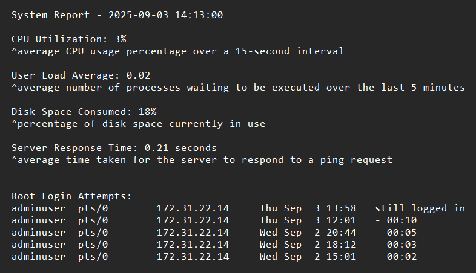

I'm Diego Contreras

I’m a System Administrator and Networking enthusiast focused on Linux, automation, and infrastructure security. I build tools, scripts, and labs that solve real operational problems.

Automated Bash script that monitors system performance and security activity, generating a timestamped report for daily server health checks.
Bash script that identifies users with stale activity by checking directory modification dates, generating a list of accounts for review.
Script that reads a list of inactive users, safely deletes their home directories and removes their associated MariaDB tables.